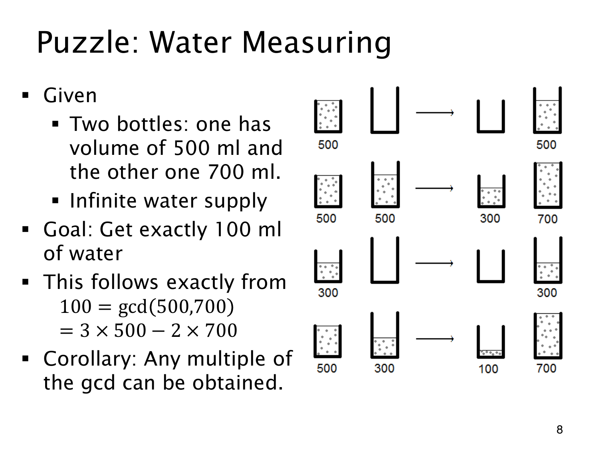

L1.13 · 第 8 页讲解原文
查看这一页课件

量出 100 ml 的倒水过程
容量 500 ml 和 700 ml 的两个无刻度容器，只用装满、倒空和相互倒水，就能量出 100 ml；水源不限。
用数对记“小容器水量，大容器水量”，图中的过程是：
- 小容器装满后倒入大容器，得到 (0,500)。
- 再装满小容器，将大容器补满，留下 (300,700)。
- 倒空大容器，再将剩下的 300 ml 倒过去，得到 (0,300)。
- 小容器再装满，倒到大容器满为止，便得到 (100,700)。
算术上用的是三份 500 ml 减去两份 700 ml：
3⋅500−2⋅700=100=gcd(500,700).
负系数表示移去或倒掉的量，不表示负的水量。
课件说 GCD 的倍数可以获得，还须结合目标怎样保存来理解。可测水量只能是 100 的倍数，但最终装进单个容器的水不能超过容量；更大总量则需允许另行收集或累计。线性组合解释了算术结构，倒水过程仍要满足容量限制。